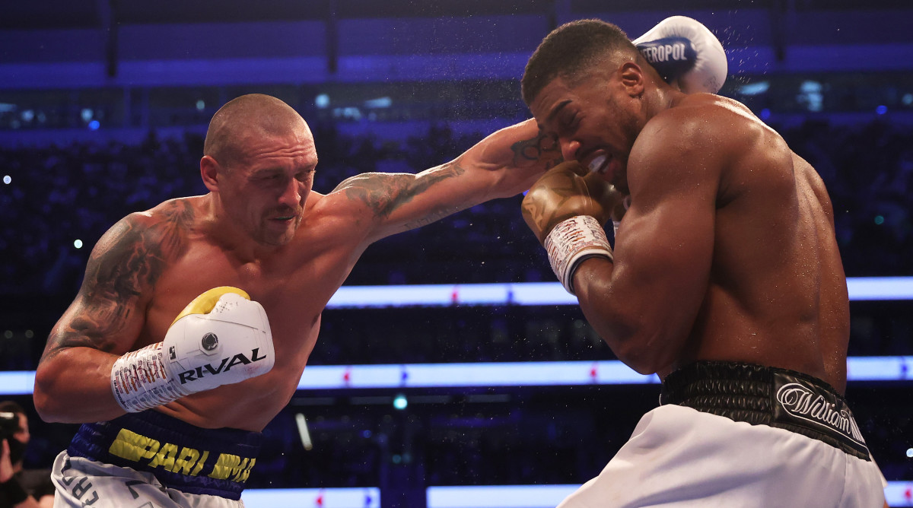

☰
Joshua Usyk Rematch?

The rematch between Anthony Joshua and Oleksandr Usyk is expected to be announced before long as AJ goes in search of revenge.
Joshua's advertiser Eddie Hearn has said the rematch could happen in March or April in 2022.Hearn likewise accepts that the battle will be held in the UK again regardless of Usyk needing to return it to his country of Ukraine and hold it at the Olimpiyskiy Stadium in Kyiv.
Hearn told talkSPORT: “There’s nothing wrong with the Ukraine, I have no idea what it’s like in February, but I’d like it back in the UK. We will sit down with Usyk’s team and we will look at the options. We’ve had a couple of international offers come in for that rematch as well. I said to AJ the other day ‘are you sure you don’t lose these fights deliberately just to have these massive rematches?’ It’s a huge fight again, but I’d love to do it back in the UK, probably in March or April. It’s a fight he must win.”
Usyk is looking forward to their rematch, his promoter Alexander Krassyuk has said. “The rematch was written in our contract,” Krassyuk said. “When we were talking to Oleksandr about the rematch, he wasn’t upset. On the contrary, he was happy.”
He was glad and said: ‘Oh, cool! I will beat up Anthony twice! The approximate time that Eddie Hearn announced is indeed true.”
Krassyuk later added that the UK is one of three locations being considered for the rematch. He said: “We have three options: the United Kingdom, Ukraine and the Middle East. We plan to meet with Eddie Hearn within the next couple of weeks to initiate the rematch activities.”
He added: “Hopefully by the end of 2021, we will be in the position to take the final decision.”
Joshua vs Usyk 2: When and where could it happen?
Joshua's advertiser Eddie Hearn has said the rematch could happen in March or April in 2022.Hearn likewise accepts that the battle will be held in the UK again regardless of Usyk needing to return it to his country of Ukraine and hold it at the Olimpiyskiy Stadium in Kyiv.
Hearn told talkSPORT: “There’s nothing wrong with the Ukraine, I have no idea what it’s like in February, but I’d like it back in the UK. We will sit down with Usyk’s team and we will look at the options. We’ve had a couple of international offers come in for that rematch as well. I said to AJ the other day ‘are you sure you don’t lose these fights deliberately just to have these massive rematches?’ It’s a huge fight again, but I’d love to do it back in the UK, probably in March or April. It’s a fight he must win.”
Usyk is looking forward to their rematch, his promoter Alexander Krassyuk has said. “The rematch was written in our contract,” Krassyuk said. “When we were talking to Oleksandr about the rematch, he wasn’t upset. On the contrary, he was happy.”
He was glad and said: ‘Oh, cool! I will beat up Anthony twice! The approximate time that Eddie Hearn announced is indeed true.”
Krassyuk later added that the UK is one of three locations being considered for the rematch. He said: “We have three options: the United Kingdom, Ukraine and the Middle East. We plan to meet with Eddie Hearn within the next couple of weeks to initiate the rematch activities.”
He added: “Hopefully by the end of 2021, we will be in the position to take the final decision.”